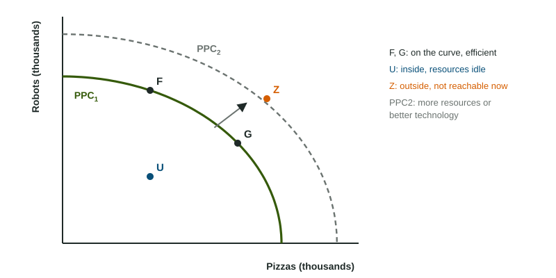
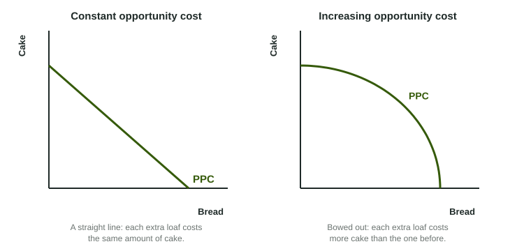

Tonight you can study for a test or work a shift that pays $80. If you study, the evening is not free: it costs you the $80 you would have earned. Every choice has a cost like that, measured in what you gave up. A whole country faces the same kind of choice, only on a bigger scale: more tractors means less wheat. The production possibilities curve puts that trade-off on a graph.
Opportunity cost
The opportunity cost of a choice is the value of the next-best alternative you give up. Only the next-best one counts, because you could not have done all the others with the same time or resources. If Jordan's Saturday options, in order, are a hike, a paid shift worth $80 and studying, the opportunity cost of the hike is the $80 shift, not the shift plus the studying.
When the choice is between amounts of two goods, the opportunity cost per unit is what you give up divided by what you gain:
The production possibilities curve

A production possibilities curve (PPC) shows every combination of two goods an economy can make when it uses all its resources and technology efficiently. Each axis is one good, labeled by name. Three kinds of point matter, as the figure shows:
- On the curve (F, G): efficient. The economy cannot make more of one good without making less of the other.
- Inside the curve (U): inefficient. Some resources are idle or badly used, as in a recession when factories sit empty and workers lose their jobs.
- Outside the curve (Z): unattainable with today's resources and technology.
Moving along the curve from F to G means making more pizzas and fewer robots. The robots given up are the opportunity cost of the extra pizzas.
Bowed out or straight

Most PPCs bow outward, because resources are not equally good at making both goods. When an economy makes only a little wheat, it grows it on the best farmland with the best farmers. To make more, it has to move in land and workers better suited to building tractors, so each extra bushel costs more tractors than the last. That is increasing opportunity cost. If resources were equally good at both, each unit would cost the same and the PPC would be a straight line: constant opportunity cost.
Worked example: opportunity cost from a table. Dornia can make these combinations in a year: 0 wheat and 20 thousand tractors; 10 million bushels and 18 thousand; 20 million and 14 thousand; 30 million and 8 thousand; 40 million and 0.
- From 0 to 10 million bushels, tractors fall from 20 to 18 thousand: 2 thousand given up.
- From 10 to 20 million, tractors fall from 18 to 14 thousand: thousand given up, or thousand tractors per million bushels.
- From 20 to 30 million: 6 thousand given up. From 30 to 40 million: 8 thousand.
- The costs rise, 2, 4, 6, 8, so Dornia faces increasing opportunity cost and its PPC bows outward.
Two traps: divide what is given up by what is gained (not the other way round), and do not read the level of tractors left (8 thousand) as the cost (6 thousand given up).
Shifting the curve
The PPC shows what is possible with today's resources and technology, so it moves only when those change. More resources (more workers, more machines, new natural resources) or better technology shift the whole curve outward: points once unattainable become possible. Losing resources, through a war or a natural disaster, shifts it inward.
An outward shift of the PPC is economic growth: the economy can now produce more of both goods than before. Growth comes from more or better resources and better technology, never from using today's resources more fully (that moves a point toward the curve). Topic 5.6 comes back to growth: how it is measured and what causes it over many years.
| Event | On the graph |
|---|---|
| Idle factories start producing again | a point moves from inside toward the curve; the curve stays put |
| Workers move from making tractors to growing wheat | a movement along the curve |
| A new technology raises output of both goods | the curve shifts outward |
| A hurricane destroys factories and farms | the curve shifts inward |
One choice moves the future curve: capital goods versus consumer goods. An economy that puts more of its resources into machines and factories today has fewer consumer goods now, but more capital tomorrow, so its PPC shifts outward faster.